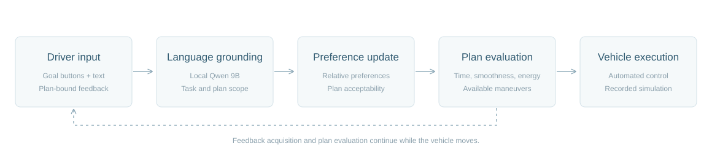

Scope matters.
Goal buttons, source text and displayed plan identities keep reasons and acceptance conditions attached to the intended decision.
Language-guided shared decision-making for intelligent vehicles
An overtaking request leaves choices about timing, smoothness and energy. Human–LLM Co-Pilot connects language interpretation, driver feedback, preference updates and automated vehicle execution in a traceable loop.
Explore the interaction
Play, pause or scrub the original task clock. The first-person scene, trajectory and decision events remain synchronized. These selected episodes use scripted scenario feedback; this page makes no live model calls.
System view
Language is grounded to the current task and displayed plans. Feedback updates uncertain preferences and plan acceptability. The planner then evaluates available maneuvers while interaction time and vehicle energy continue to accumulate.

Goal buttons, source text and displayed plan identities keep reasons and acceptance conditions attached to the intended decision.
Additional feedback competes with the remaining maneuver window. Vehicle motion, planning and complete-task energy are recorded throughout.
The replay exposes actual model summaries, feedback events and the resulting trajectory. It presents a recorded process rather than aggregate performance claims.
Project materials
The public repository contains this project page, selected replay data and the presentation renderer. The research implementation is maintained separately in a private repository.